Images
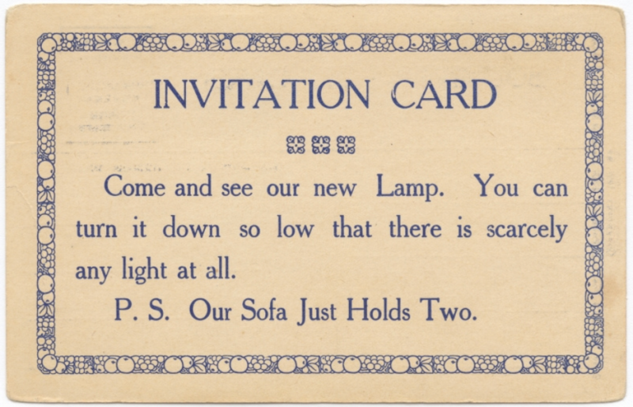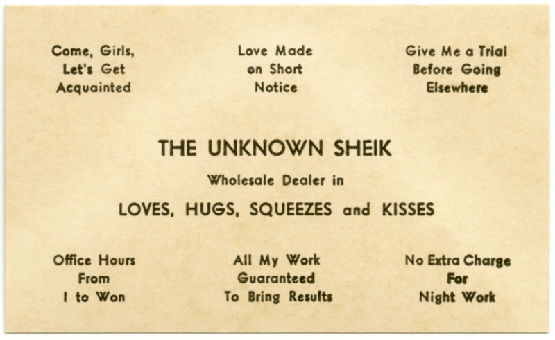
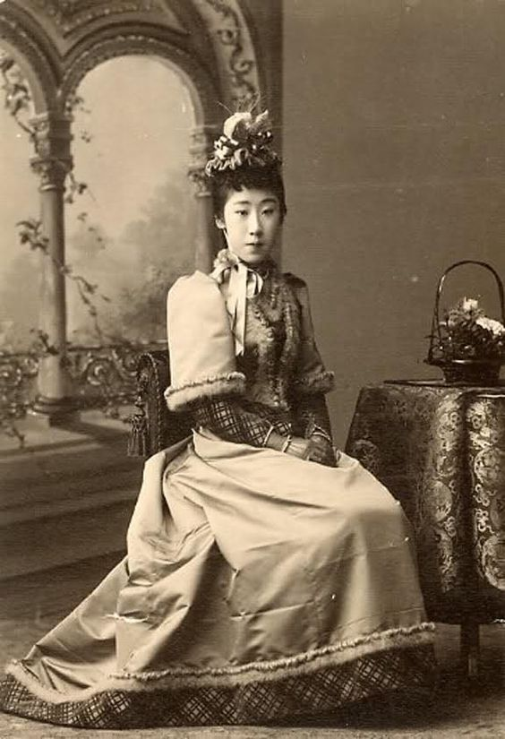
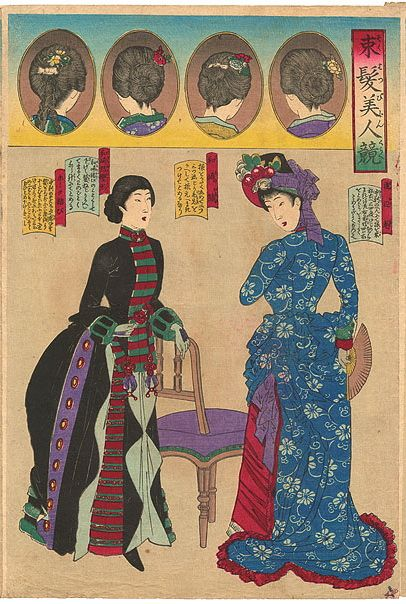
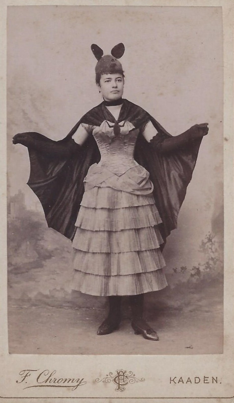
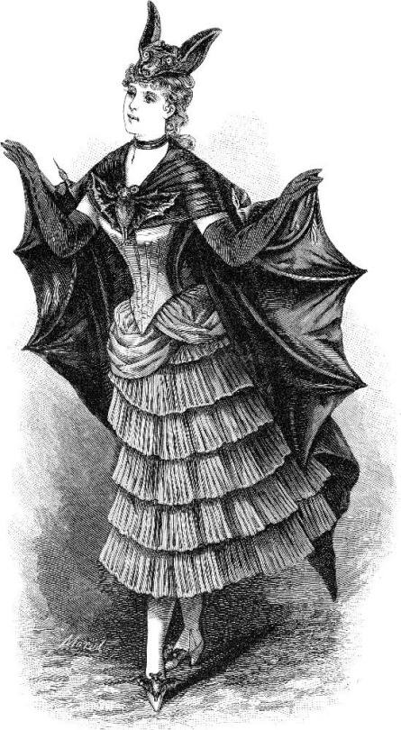
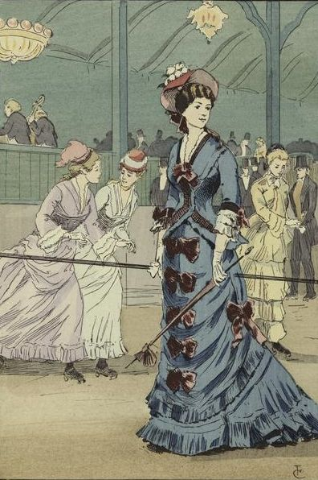
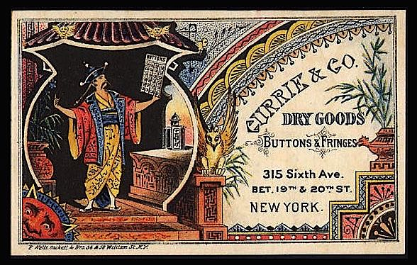
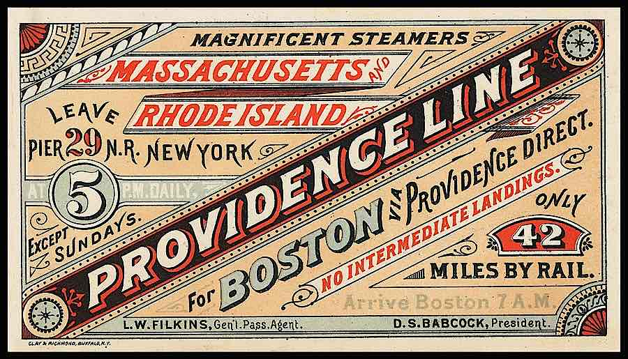
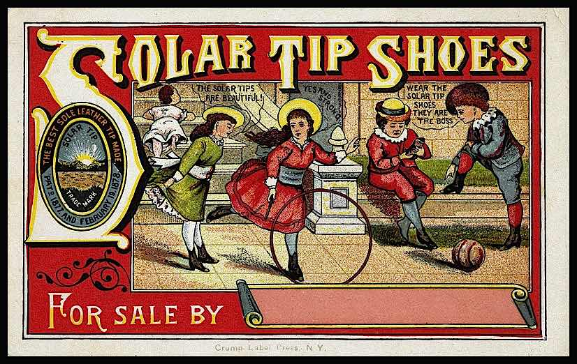
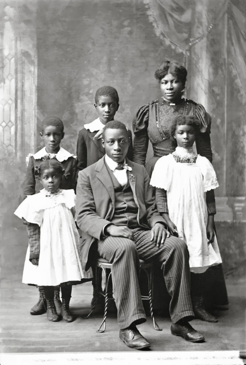
Videos
Victorian Home Life
BBC Schools
Victorian Town Life
BBC Schools
Etiquette of the 1890s
Janet Parnes performs as Mrs. Russell Parsons
Audio
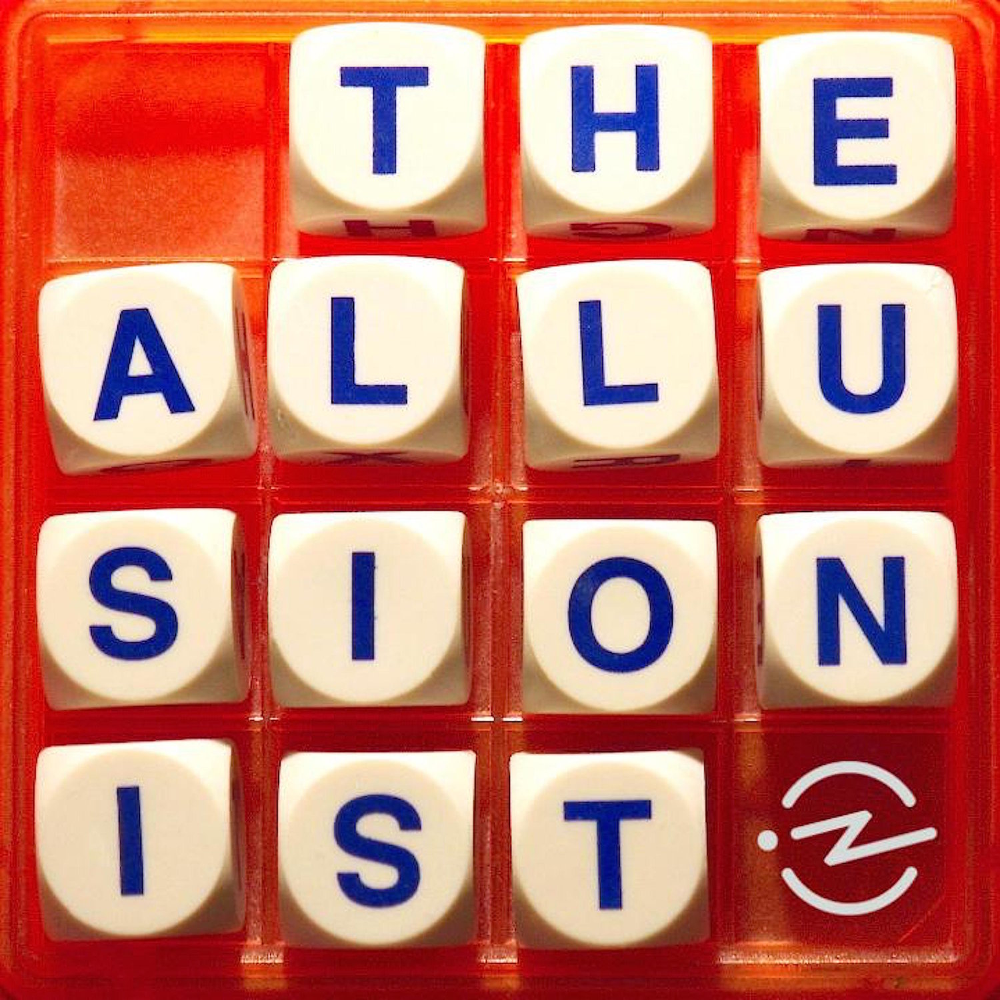
Lonely Hearts Ads
The Allusionist: WLTM Part 1
As soon as one got the first newspapers and magazines, one got the first lonely hearts ads. They all emerged together. In the 1690s in London, suddenly the streets were full of newspapers and magazines; print really took off in a big way.
- Francesca Beauman